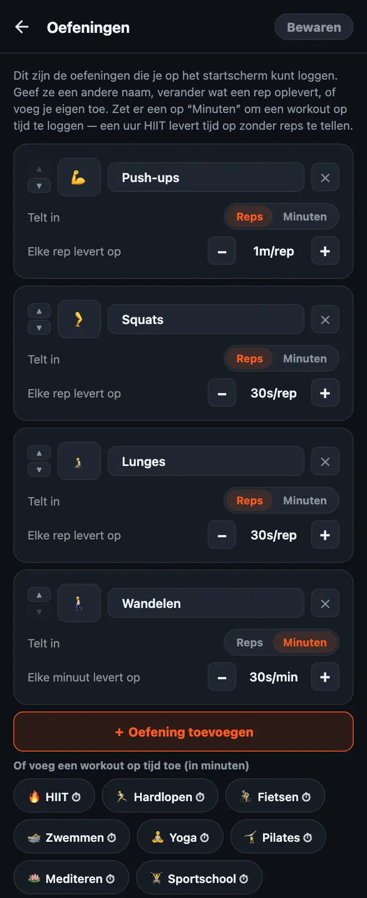

Zo pas je je oefeningen aan in HonorFit
Hoi allemaal! HonorFit begon als mijn eigen app blocker met opdrukken (Engels): Instagram blijft op slot tot ik een paar push-ups heb gedaan, en die log ik zelf, op erewoord (Engels), zonder camera. Standaard zitten er vier oefeningen in: push-ups, sit-ups, optrekken en squats.
Maar niet iedereen wil push-ups doen. Misschien haten je polsen ze, misschien doe je liever burpees, of misschien heb je vandaag al 8 kilometer hardgelopen en wil je dat dat meetelt. Terecht! Daarom kun je alles aanpassen. Hier lees je precies hoe, en wat gratis is en waarvoor je Pro nodig hebt.
Wat is gratis en wat is Pro
Eerst het goede nieuws: vanaf versie 1.15.0 is bijna alles in deze post gratis. HonorFit heeft vier standaardoefeningen met deze waarden:
| Oefening | Elke rep levert op (standaard) |
|---|---|
| 💪 Push-ups | 1 minuut |
| 🔥 Sit-ups | 30 seconden |
| 🧗 Optrekken | 1 minuut 30 seconden |
| 🦵 Squats | 30 seconden |
In de gratis versie kun je oefeningen hernoemen, van volgorde veranderen en verwijderen, aanpassen wat elke rep oplevert, workouts op tijd loggen in minuten en tot 3 eigen oefeningen toevoegen. De wielen gaan tot 100 per set, en je kunt tot 2 uur tegelijk opsparen. Blokkeren, loggen en statistieken zijn voor altijd gratis.
Pro kost $3 per maand of eenmalig $19,99. Dat is de Amerikaanse prijs; per land en valuta verschilt het, en de store laat je jouw prijs zien. Voor oefeningen betekent Pro: zoveel eigen oefeningen als je wilt. Verder verdwijnt de limiet van 2 uur opgespaarde tijd, en krijg je bewaarde routines, pauzemodus, pofmodus en geschiedenis per maand en jaar.
1. Open de oefeningeneditor
- Tik op het startscherm rechtsboven op het tandwiel om Instellingen te openen.
- Tik bovenaan op de kaart Oefeningen.
Je ziet één kaart per oefening. Niets wat je hier doet, gaat in tot je rechtsboven op Bewaren tikt, dus klik gerust overal op. Ga je terug zonder te bewaren, dan verandert er niks.

2. Hernoem een oefening of verander de emoji
Tik op de naam en typ wat je wilt. Van ‘Push-ups’ kun je ‘Knie-push-ups’ of ‘Muuropdrukken’ maken als je dat eigenlijk doet. Om het icoon te veranderen, tik je op het emoji-vakje links en kies je er een uit het raster (er zijn er zo’n 40, min of meer sportief).
Klein dingetje: de standaardnamen volgen de taal van de app, dus ‘Optrekken’ verschijnt als ‘Pull ups’ als je telefoon in het Engels staat. Zodra je er een hernoemt, zie je precies wat je hebt getypt.
3. Stel in hoeveel schermtijd elke rep oplevert
Onder elke oefening staat Elke rep levert op met een −- en een +-knop. Elke tik verandert de waarde met 5 seconden, en lager dan 5 seconden kan niet. Je kunt burpees dus 1m30s waard maken en jumping jacks 10s, net wat jij eerlijk vindt.
Je kunt ook alleen de waarden aanpassen zonder de editor te openen: in Instellingen staat direct onder de kaart Oefeningen het onderdeel Waarde per rep, met dezelfde −/+-knoppen.
4. Voeg een oefening toe
Twee manieren:
- Tik op ‘＋ Oefening toevoegen’. Je krijgt een nieuwe kaart die ‘Nieuwe oefening’ heet en 30 seconden per rep waard is. Hernoem hem en stel de waarde in.
- Tik op een suggestie. Onder de knop staat een rij bekende oefeningen die je met één tik toevoegt: Burpees, Lunges, Jumping jacks, Plank, Mountain climbers, Dips, Touwtjespringen, Knieheffen, Bicepscurls, Kettlebell swings, Wall sit, Russian twists, Glute bridges en Kegeloefeningen. Die beginnen ook op 30 seconden per rep. Zodra je er een toevoegt, verdwijnt hij uit de suggesties.
In de gratis versie kun je tot 3 eigen oefeningen tegelijk hebben (hernoemde standaardoefeningen tellen niet mee). Met Pro is dat onbeperkt.
Elke oefening krijgt een eigen wiel op het startscherm, dus ik zou het bij een stuk of vier houden. Meer dan dat en je zit te scrollen om de goede te vinden.
5. Log workouts op tijd (minuten in plaats van reps)
Hier krijg ik de meeste vragen over. Sommige beweging tel je gewoon niet in reps: een wandeling, een yogales, een rondje hardlopen, een uur in de sportschool. Elke kaart heeft een schakelaar Telt in: Reps | Minuten. Zet hem op Minuten, dan telt dat wiel minuten en wordt de waarde Elke minuut levert op.
Er zijn ook suggesties op tijd die je met één tik toevoegt (die hebben een ⏱): HIIT, Hardlopen, Fietsen, Zwemmen, Yoga, Pilates, Mediteren, Sportschool en Wandelen.
Nieuwe workouts op tijd beginnen op 30 seconden per minuut, dus een uur HIIT levert 30 minuten app-tijd op. Let op: als je een oefening omzet tussen Reps en Minuten, springt de waarde terug naar 30 seconden, want ‘1 minuut per rep’ en ‘1 minuut per minuut’ zijn nogal verschillende deals. Stel hem na het omzetten gewoon opnieuw in.
Het wiel telt hele minuten, dus een plank van 30 seconden past niet echt als Minuten. Voor zulke statische oefeningen zou ik het op Reps laten en zelf bepalen wat een rep voor jou is (bijvoorbeeld één keer 20 seconden vasthouden).
6. Verwijder er een, of begin opnieuw
- Tik op het ✕ op een kaart om die oefening te verwijderen. Je moet er altijd minstens één houden.
- Standaard herstellen onderaan zet de oorspronkelijke vier terug, met hun oorspronkelijke waarden. Net als al het andere hier gaat dat pas in als je op Bewaren tikt.
Hoe ik de waarden zou kiezen
De waarde is de prijs van je apps, dus het doel is een prijs die je echt betaalt in plaats van erover te liegen. Een paar uitgangspunten:
- Zwaardere oefeningen leveren meer op. Optrekken en burpees op 1m30s, push-ups op 1m, squats en lunges op 30s.
- Workouts op tijd op ongeveer de helft. 30 seconden per minuut betekent dat 20 minuten wandelen je 10 minuten scrollen oplevert. Is wandelen de gewoonte die je het liefst wilt opbouwen, zet het dan op 1 minuut per minuut.
- Betrap je jezelf op sjoemelen met het aantal, verlaag dan de prijs. Dat is mijn regel bij het erewoord-systeem. Reps loggen die je niet hebt gedaan betekent dat de prijs niet klopt, niet dat jij het slecht doet.
- De zware modus (gratis) halveert alle waarden met één knop bovenaan het startscherm, als je een zwaardere dag wilt zonder alles aan te passen.
Wil je ideeën voor specifieke setups, dan heb ik nog twee posts geschreven: kegeloefeningen en de bilbrug als oefeningen om te ontgrendelen, en rustige oefeningen voor als push-ups niks voor jou zijn.
HonorFit Blocker is een gratis app blocker voor iPhone en Android. Op erewoord, geen camera, en er gaat niks van je telefoon af. Tot 3 eigen oefeningen en workouts op tijd zijn gratis; met Pro is het onbeperkt. Het is niet voor iedereen, maar misschien vinden sommigen van jullie het wel leuk!